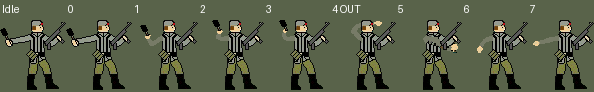

Levo je izvorno stajanje; desno bacanje. Prvi kadar je ista slika. Otpuštanje je na početku kadra 4 (0,40 s); poslednji kadar ostaje prikazan.

Uvećani kadrovi · GIF (pauza na kraju) · Metapodaci
Pripremljen art za pregled vlasnika; povezivanje u igru radi se posebno.